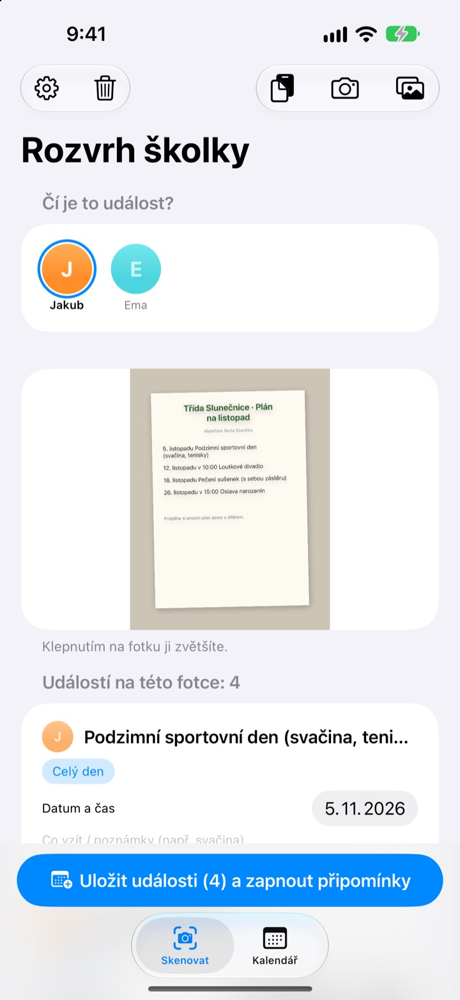
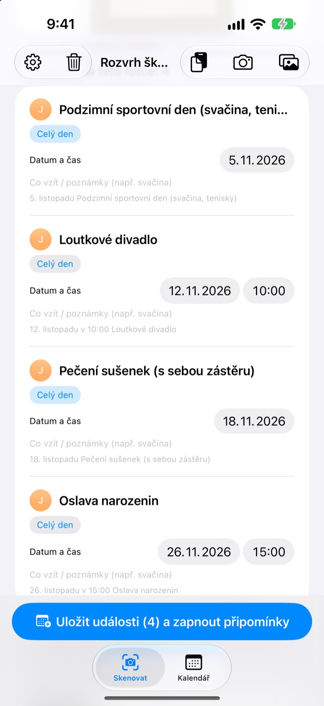
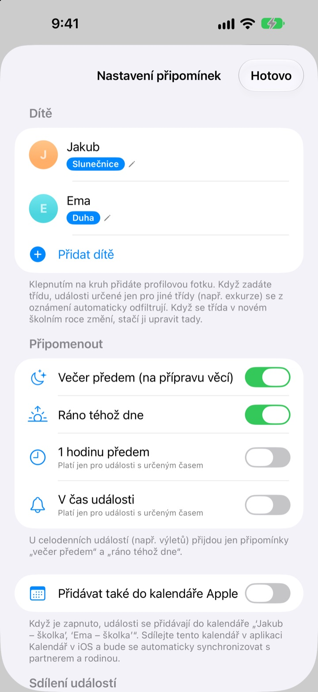
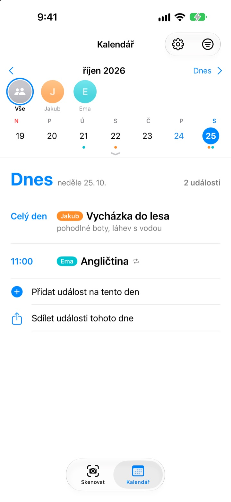

Stačí vyfotit.
Na batůžek připomeneme.
Vyfoťte měsíční plán, který dostanete ve školce. Rozvrh školky přečte data, časy a názvy akcí a uloží je všechny najednou. Večer před výletem ve 20:00 přijde připomenutí: nezapomeňte svačinu.
Všechny funkce jsou zdarma. Fotky z vašeho iPhonu nikam neodcházejí.

Vyfoťte oznámení
Tady je ukázkové oznámení s akcemi na příští měsíc. Vyfoťte ho a stejně jako v aplikaci se z něj vytáhnou akce a věci s sebou a připomenutí se naplánují na časy, které si vyberete.
Pořád přepisujete oznámení ze školky do kalendáře?
Pět, šest akcí za měsíc a pokaždé je potřeba něco jiného: svačina, cvičební úbor, zástěra. Plán na lednici cestou do práce nevidíte a vzpomenete si vždycky až to ráno. Rozvrh školky z toho papíru udělá události v kalendáři a připomenutí.
Jedna fotka, celý měsíc
Měsíční tabulka, dopis rodičům nebo jednotlivý leták: vyfoťte ho nebo vyberte z knihovny a data, časy i názvy akcí se přečtou za vás. Vložit můžete i zprávu od učitelky, slova jako „zítra“ nebo „tento pátek“ se změní na skutečná data.
Před uložením rovnou opravíte název, datum nebo věci s sebou a co nepotřebujete, odsunete. Zadejte třídu dítěte a akce jen pro jiné třídy se vyřadí samy.

Večer předem připomenutí
Vyberte si 20:00 večer předem, 7:30 ráno téhož dne, 1 hodinu předem nebo přesně v čas akce. Věci s sebou se ukážou přímo v připomenutí, takže batůžek bude sbalený.
S kalendářem Apple se akce uloží do kalendáře se jménem dítěte a nikdy se nepřidají dvakrát.

Víc dětí i celá rodina
Každé dítě má svou barvu. Zobrazte všechny najednou nebo každé zvlášť; podle dřívějších akcí aplikace odhadne, komu nové oznámení patří.
Pošlete odkaz s pozvánkou a partner, prarodiče nebo chůva uvidí a upraví stejné akce. Widget na ploše ukáže, co se blíží.

Začnete ve třech krocích
- 1
Přidejte dítě
Jméno a třída. Profilovou fotku kdykoli později.
- 2
Vyfoťte oznámení
Zpříma a s ostrým textem se čte nejlépe.
- 3
Zkontrolujte a uložte
Povolte oznámení a připomenutí přijdou ve zvolený čas.
Kdy přicházejí připomenutí
- 20:00 večer předem
- Na přípravu věcí. Zapnuto od začátku
- 7:30 ráno téhož dne
- Co je dnes. Zapnuto od začátku
- 1 hodinu předem
- Jen u akcí s určeným časem
- V čas události
- Jen u akcí s určeným časem
Celodenní akce, třeba výlet, mají jen připomenutí večer předem a ráno. Každé můžete kdykoli zapnout nebo vypnout v nastavení.
Všechny funkce jsou zdarma
Zdarma
- Čtení akcí z fotek a zpráv
- Úpravy před uložením, filtr jiných tříd
- Připomenutí večer předem, ráno, hodinu předem i načas
- Barva pro každé dítě a společný kalendář
- Synchronizace s kalendářem Apple
- Sdílení s rodinou přes odkaz
- Widget na ploše
Podpořit vývojáře
- V nastavení můžete poslat malé spropitné v libovolné výši
- Spropitné nic neodemyká. Aplikace funguje stejně i bez něj
Žádné reklamy, žádné předplatné.
Časté otázky
Jaké fotky se dají použít?
Měsíční plány v tabulce, oznámení psaná souvislým textem a jednotlivé letáky. Fotka pořízená zpříma s ostrým textem se čte lépe. Můžete také vybrat několik fotek a naskenovat je najednou.
Pár akcí chybí nebo je v názvu překlep.
Ručně psaný nebo bledý text se čte hůř. Název, datum nebo věci s sebou opravte přímo v seznamu a nepotřebné odsuňte. Chybějící akci přidejte přes „Přidat událost ručně“ na kartě Skenovat a uložte znovu.
Nechodí mi připomenutí.
Zkontrolujte v Nastavení > Oznámení > Rozvrh školky, že jsou oznámení povolená. V nastavení aplikace (⚙️) si také vyberete, která připomenutí chcete dostávat.
Objevují se akce jiných tříd.
Zadejte v nastavení název třídy dítěte a akce jen pro jiné třídy se vyřadí. Když se v novém školním roce třída změní, stačí ji upravit tam.
Mám víc dětí.
V nastavení přidáte libovolný počet dětí, každé s profilovou fotkou. Při skenování vyberte, čí akce to jsou: v kalendáři má každé dítě svou barvu a můžete přepínat mezi společným pohledem a filtrem podle dítěte.
Jak sdílet program s partnerem?
V nastavení v části „Sdílení událostí“ klepněte na „Pozvat ke sdílení“ a pošlete odkaz zprávou. Pozvaný uvidí a upraví všechny děti i akce a změny z kterékoli strany se hned projeví u obou. Se Sdílením v rodině od Applu to nesouvisí.
Dá se sdílet i jinak?
Tlačítkem sdílení na kartě Kalendář pošlete soubor Rozvrhu školky, soubor kalendáře (.ics) nebo textový souhrn. Se zapnutým „Přidávat také do kalendáře Apple“ vznikne kalendář se jménem dítěte; když ho v aplikaci Kalendář nasdílíte přes iCloud, bude mít přehled i rodina.
Posílají se moje fotky nebo akce někam?
Ne. Text z fotek se čte celý v zařízení a data zůstávají jen v něm. Akce jdou přes váš iCloud jen tehdy, když někoho pozvete přes „Sdílení událostí“, a jen k pozvaným lidem.
Něco nefunguje nebo vám chybí funkce? Napište na leeo@kakao.com. Obvykle odpovídáme do 2–3 dnů. Model zařízení a verze iOS nám pomohou.